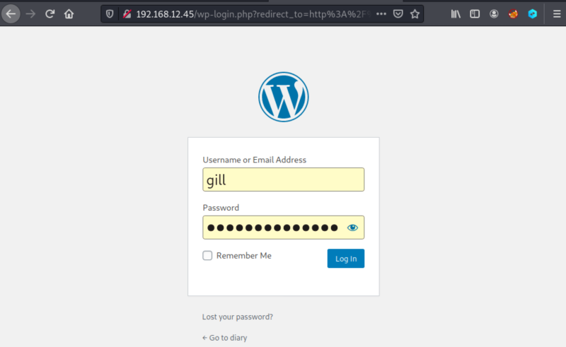
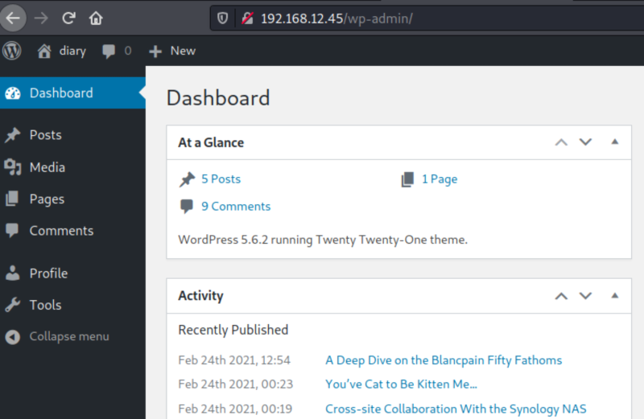
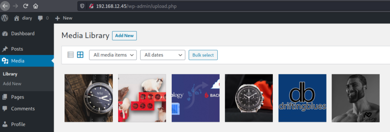

3.3 Login Wordpress
Log in Wordpress to enumerate the plugins and themes.
1. Go to http://192.168.12.45/wp-admin/ and use the credentials we've got in the previous step.
• Username: gill.
• Password: interchangeable.


You can see this user is not an admin because he can't access to adminstrative options.
2. Click on the “Media” option on the left menu.

3. Visit http://192.168.12.45 and you'll see all the images but one is on the posts.
File name: dblogo.png